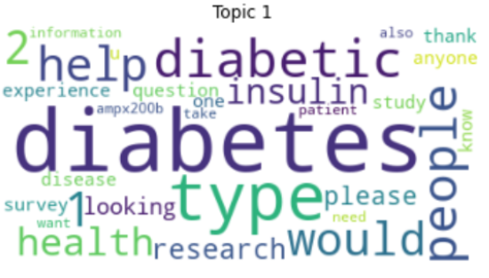
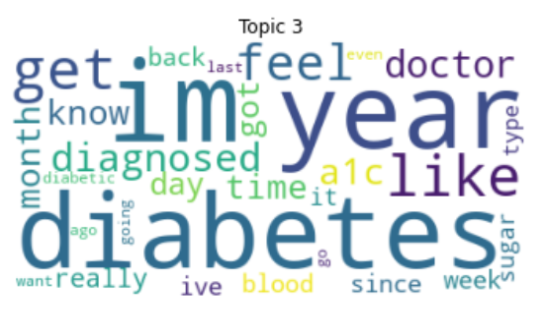
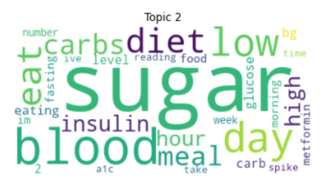
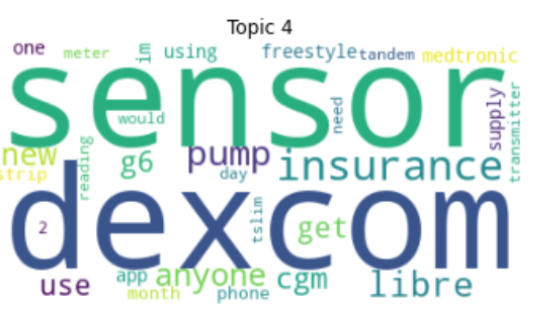

In this part, we did Topic Modeling on the Reddit data set, which contains the submissions in subreddit “Diabetes” in the past three years. We used the LDA Algorithm to find prevalent topics in this diabetes patient community to find out what the patients are concerned about. Here are the Topic Word distributions and visualizations in the form of Word Cloud(set K=4):
 Topic 3 and Topic 1 seem very similar. After people get diagnosed with diabetes, they will go to Online communities like Reddit for help, including consulting other patients and sharing experience and emotions. However, they have slightly different focuses. Topic 1 focuses more on the information of diabetes, while Topic 3 pays more attention to the experience of diabetes. This indicates that Topic 1 is more for people to seek help and learn more information about diabetes, and Topic 3 is more for people to share their own experience of diabetes.
 In Topic2, people are talking about keeping a diet and reducing the sugar intake. “carbs”, “sugar”, and “glucose” are similar to each other. It shows that the model we have has a strong relation to diabetes since the word cloud tells that people care what they put in their body, especially sugar, which is a great contributor to diabetes. Also, blood and glucose are closed indicators for diabetes.
In Topic4, the documents are associated with sensor, dexcom and insurance. DexCom, Inc. is a company that develops, manufactures, and distributes continuous glucose monitoring (CGM) systems for diabetes management. Cgm is also prevalent in this topic, which proves the significance of our Model. “Sensor”, “dexcom”, “cgm” here refer to the sensor systems for diabetes patients to control their body.